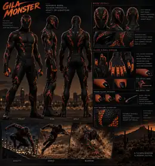

OLDROOT / CHARACTER REGISTRY
CHARACTERS
Every character appears once. Categories are filters, not duplicate lists. Organization, affiliation, origin, geography, and analytics bands can all change the view without cloning the same character across the page.

Hero · Non-Ascendant
Gila Monster
Adrián Zúñiga
Tucson-based TPD detective and ASC-altered nocturnal metahuman with desert-specialized movement and equipment-driven offense.
Open dossier →
Hero · Human · Non-Ascendant
Commotion
Ja’Kori Benson
Chicago vigilante and former professional boxer who weaponizes agility, dirty fighting, close-quarters awareness, and the room around him.
Open dossier →Power-band filtering uses the analytics mean only as a browsing aid. It is not a canonical overall power score.